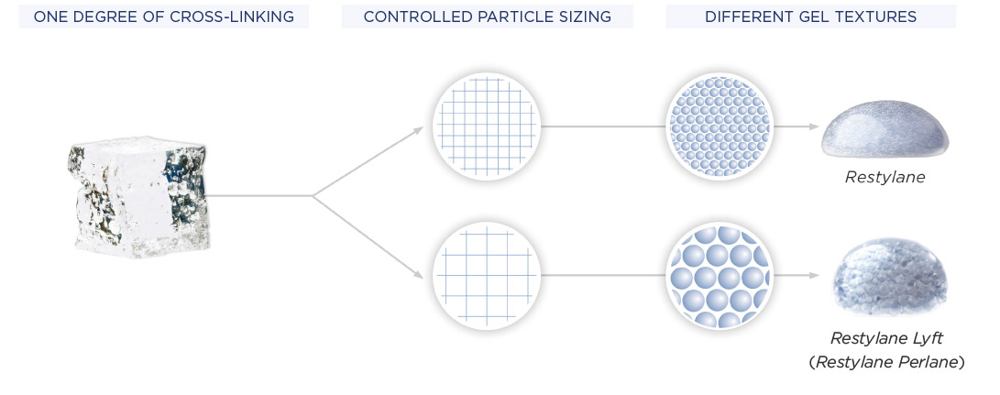
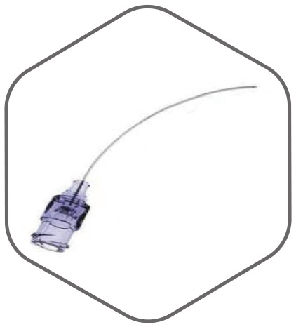

PRODUCT SCIENCE
The science behind Galderma Aesthetic & Corrective products.
As a world leader in dermatology, Galderma has extensive research and development expertise, which has yielded a number of innovations in the medical aesthetics field that have been backed by clinical studies.
RESTYLANE PRODUCTS
Restylane products contain hyaluronic acid (HA), a naturally occurring substance that keeps our skin hydrated and firm, through its unique ability to bind water molecules,5 and also promotes wound healing by influencing cell motility.6
Although HA is naturally produced by our cells, as we age its production slows down. This means that our skin can become thinner, dehydrated and less firm, losing its radiance and youthful appearance. The natural ageing process also drives changes to the underlying bone structure of the face, which contribute to a lack of definition in facial contours,7 such as the cheeks.
The Restylane portfolio can help you, the aesthetic professional, to restore, enhance and refresh your patients’ skin in harmony with their individual needs and wishes.
PATENTED NASHA™ TECHNOLOGY
A selection of the Restylane portfolio is created using the patented Non-Animal Stabilised Hyaluronic Acid (NASHA). This creates a firmer gel texture for more pronounced lifting capacity and targeted product integration within the skin, offering long-lasting results and a good safety profile.
NASHA-based products contain non-animal-derived HA, a naturally occurring sugar molecule that offers structure and hydration to the skin but is depleted with age.5 HA in NASHA products is produced through bacterial fermentation and tested for impurities using highly sensitive methods to ensure that patients do not develop systemic reactions such as fever and inflammation in response to the presence of bacterial toxins.
NASHA technology maintains the natural molecular structure of HA by preserving the cross-links between HA molecules. Minimal modification of the HA (~1%) means that it is not recognised by the body as foreign and therefore avoids inflammation and hypersensitivity reactions to the gel. It also helps to maintain the effects of HA gels for longer.
The HA gel is stabilised through the addition of a controlled number of synthetic cross-links, using Galderma’s patented stabilisation process.
The NASHA gel particle size varies depending on the desired effect:
- Restylane dermal fillers have larger particles to fill and volumise
- Restylane Skinboosters™ have smaller particles to deliver hydration deep within the dermis, with a limited volumising effect
- The Restylane skincare range uses tiny crystal-shaped particles of NASHA to reflect light and make the skin ‘glow’ on the outside
Restylane Restore and Enhance products based on NASHA technology (Restylane, Restylane Lyft™, Restylane Lyps™, Restylane SubQ™) contain a constant concentration of 20mg/ml HA. Restylane Skinboosters contain either 20mg/ml or 12mg/ml HA to tailor the treatment to different patient needs.

NASHA PRESERVES THE NATURAL CROSS-LINKS BETWEEN HA MOLECULES COMBINED WITH DIFFERENTLY SIZED GEL PARTICLES TO ACHIEVE DIFFERENT LEVELS OF LIFT.
CLINICAL STUDIES
NASHA gels in Restylane Restore, Enhance and Refresh products are supported by decades of randomised clinical trials and scientific publications.
Clinical trials have shown that HA gels made with NASHA technology are safe and effective at improving skin condition and correcting defects in various facial sites.2,5,8–11
Treatment with Restylane fillers that are based on NASHA technology offered significant improvements in wrinkle severity, which persisted for up to 18 months.2
NASHA-based Restylane Skinboosters and skincare products offered long-lasting improvements to skin condition, including increased facial hydration3,12, fewer wrinkles9 and reduced facial surface roughness such as acne scars.10
Copies of the studies cited here are available on request from Galderma – for more information, please contact us.
IMPROVEMENTS TO THE MEAN WRINKLE SEVERITY (WRINKLE SEVERITY RATING SCALE (WSRS) OVER 18 MONTHS OF THE 61 PATIENTS WHO WERE TREATED WITH RESTYLANE, INCLUDING TOUCH-UP (ADAPTED FROM NARINS ET AL. 2008).
OPTIMAL BALANCE TECHNOLOGY™
The Restylane portfolio is complemented with products that are produced using Optimal Balance Technology (OBT), which creates a softer gel texture for distributed product integration within the skin, achieved by varying both the degrees of hyaluronic acid (HA) cross-link and the gel particle size.
OBT gels contain non-animal-derived HA, a naturally occurring sugar molecule that offers structure and hydration to the skin but is depleted with age.5
OBT offers four degrees of cross-linking between HA molecules for different levels of softness/firmness. Lower levels of cross-linking create a gel in which the HA molecules are more loosely bound. The resulting softness makes the gel ideal for injecting in the dermis. More cross-links give rise to a firmer gel that is more stable and suitable for injection in deeper sites.
The different levels of cross-linking are combined with variability in gel particle size, generated by passing the gel through three carefully calibrated sieves. The differently sized gel particles offer distinct lifting capacities, with larger particles primarily delivering fill and volume, and products with smaller particles mainly delivering hydration.
The concentration of the HA molecule is kept at a constant 20mg/mL in all of the OBT-based Restylane products (Restylane Fynesse™, Restylane Refyne™, Restylane Volyme™, Restylane Defyne™ and Restylane Kysse™).
CLINICAL STUDIES
OBT gels are supported by numerous randomised clinical trials and scientific publications.
Clinical trials1,4,13 have shown that HA-based fillers designed with OBT are safe and effective at improving the appearance of the skin in a variety of areas, including the lips, cheeks, nasolabial folds and periocular areas.
The effects of treatment were long lasting, with improvements persisting for between 6 months13 and 18 months4 depending on the study and the treated site. Patients were satisfied with the outcome of their treatment and would recommend it to a friend.4,13
Copies of the studies cited here are available on request from Galderma – for more information, please contact us.
SUSTAINED VOLUME IMPROVEMENTS AT 18 MONTHS, AS ASSESSED BY 3D IMAGE ANALYSIS IN 30 PATIENTS TREATED WITH RESTYLANE FILLERS (ADAPTED FROM TALARICO ET AL. 2015).
DELIVERY DEVICES
The delivery devices for Restylane Restore, Enhance and Refresh products have been carefully designed to produce the best possible outcomes while making treatment comfortable for both you and your patients.
SYRINGE FOR NASHA™-BASED PRODUCTS
The Restylane syringe for products based on our Non-Animal Stabilised Hyaluronic Acid (NASHA) technology includes a number of features that ensure precision and comfort. This syringe is used by the following Restylane Restore, Enhance and Refresh products:
- Restylane
- Restylane Lyft™
- Restylane Lyps™
- Restylane SubQ™
- Restylane Skinboosters™ Vital
- Restylane Skinboosters™ Vital Light
The light and comfortable syringe includes ergonomic features, such as a finger grip and thumb rest for greater working comfort for aesthetic practitioners, and a plunger rod to enhance stability. These are combined with security features like a tamper-proof seal, offering improved security and the reassurance to both aesthetic healthcare professional and patient that the product is sterile.
The Restylane Skinboosters delivery system is also designed with the award-winning SmartClick™ system, a completely new audible dosage indicator that has been developed to increase the security and accuracy of injection, delivering ~ 10μl droplets of the gel for every audible click.
The NASHA Restylane product syringe is compatible with thinwalled needles, which combine unique features to ensure that injection is easy for you and comfortable for your patients:
- Silicone coating helps the needle advance smoothly through the different layers of the dermis
- Small penetration area reduces trauma
- Ultra-sharp lancet keeps needle sharp throughout treatment
They are also compatible with pix’L microcannulae, which are designed to provide minimally invasive and safe treatment, reducing trauma, pain and downtime for patients:
- A blunt tip displaces blood vessels without injuring them to avoid pain, redness and swelling
- High flexibility increases injection comfort
- A unique design hole allows it to glide through tissues without causing damage
- Smooth, polished external surfaces minimise tissue injury
SYRINGES FOR OBT-BASED PRODUCTS
The Restylane syringe for products based on Optimal Balance Technology™ (OBT) has been carefully designed to ensure comfort for both the aesthetic practitioner, and the patient. This syringe is used by the following Restylane Restore and Enhance products:
- Restylane Fynesse™
- Restylane Refyne™
- Restylane Fynesse™
- Restylane Volyme™
- Restylane Defyne™
- Restylane Kysse™
The syringes, which come pre-filled with the product for your convenience, have a unique ergonomic design that includes a finger rest for easy handling, combined with a sturdy and secure construction to help you provide the most precise results.
Restylane OBT-based products are injected into the skin using our ultra-thin-walled needles, which are securely connected to the syringe with a Luer lock. Their unique technology incorporates a 30–40% greater internal diameter, while maintaining the same external diameter as thin-walled needles, to:
- Optimise extrusion force
- Facilitate injection
- Improve comfort
They are also compatible with pix’L microcannulae, which are designed to provide minimally invasive and safe treatment, reducing trauma, pain and downtime for patients:
- A blunt tip displaces blood vessels without injuring them to avoid pain, redness and swelling
- High flexibility increases injection comfort
- A unique design hole allows the microcannula to glide through tissues
- Smooth, polished external surfaces minimise tissue injury
